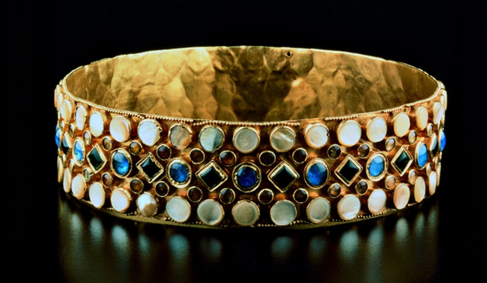
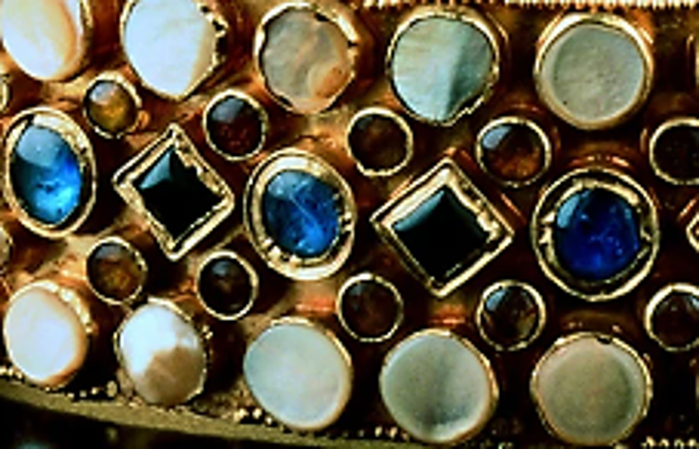
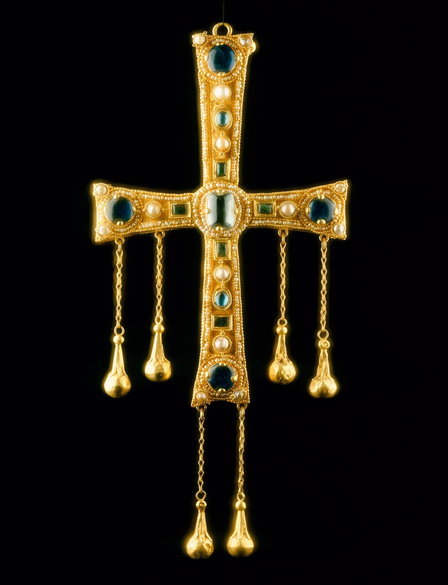
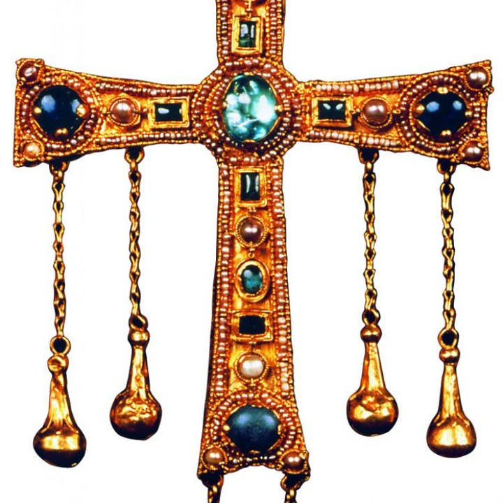
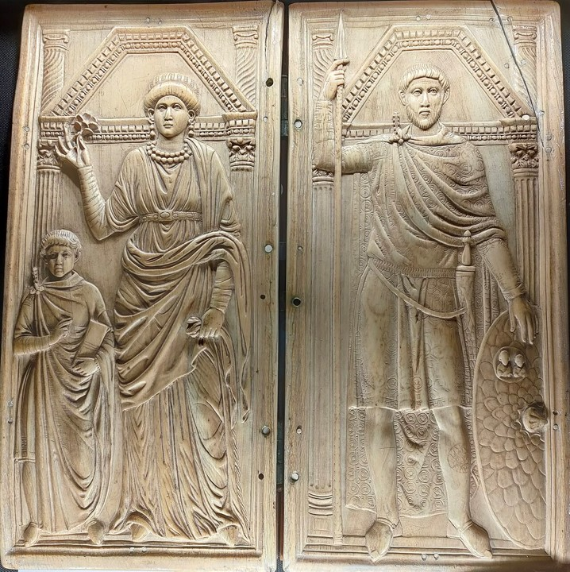
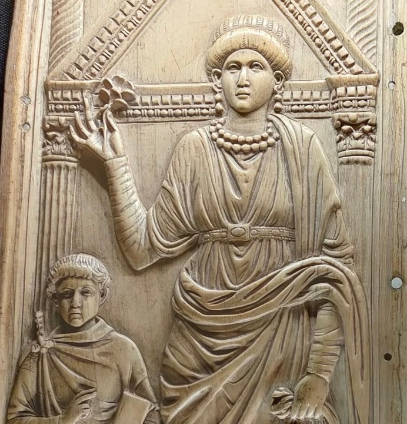
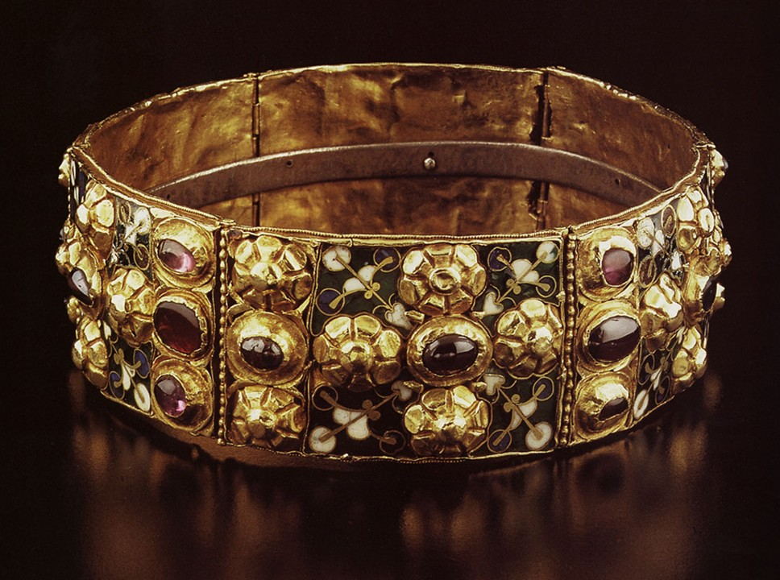
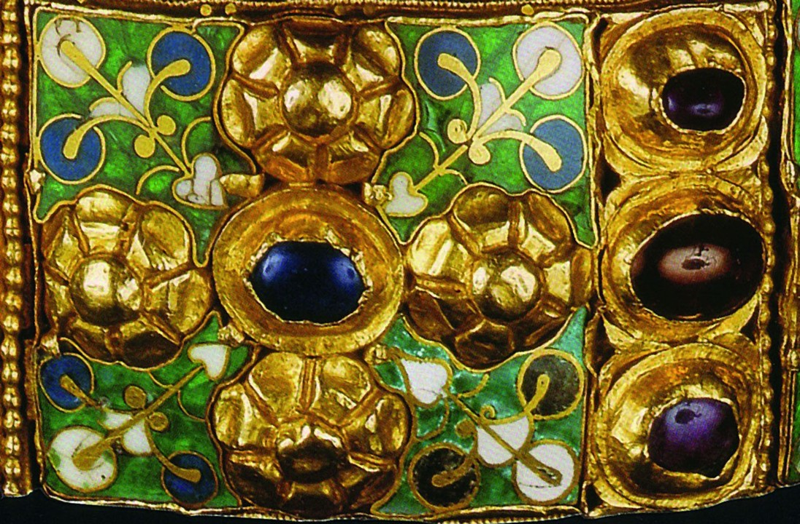

Un tema
La legittimazione del potere tra impero, regalità e autorità ecclesiastica.
I segni della sovranità tra tardo antico e medioevo
REGALIA è un progetto espositivo dedicato agli oggetti che, nel corso della storia italiana, hanno reso il potere visibile, riconoscibile e trasmissibile. La mostra riunisce testimonianze provenienti da Milano e dal territorio lombardo, mettendo in relazione insegne regali, strumenti di autenticazione e manufatti associati all’autorità civile ed ecclesiastica.
Il percorso si concentra sul momento in cui il potere non si limita a essere esercitato, ma viene formalmente riconosciuto: nei gesti dell’incoronazione, nei segni dell’investitura, negli oggetti che rendono valido un comando e ne conservano la continuità simbolica.
La legittimazione del potere tra impero, regalità e autorità ecclesiastica.
Milano, Monza e Pavia: luoghi in cui l’autorità ha assunto forme e segni differenti.
Oggetti che non si limitano a rappresentare il potere, ma ne sanciscono il riconoscimento pubblico.
Tra le opere più rappresentative del Tesoro del Duomo di Monza, la Corona di Teodolinda costituisce una testimonianza significativa dell’oreficeria altomedievale e del rapporto tra regalità e devozione.
Tradizionalmente associata alla figura della regina Teodolinda, l’oggetto si colloca in un contesto in cui il potere non è ancora separato dalla dimensione religiosa, ma si esprime attraverso simboli condivisi tra corte e culto. La corona non svolge soltanto una funzione ornamentale: è un segno visibile di appartenenza, autorità e continuità dinastica.
Nel percorso espositivo, la sua presenza introduce il tema della trasformazione del potere tra tarda antichità e alto medioevo, mostrando come gli oggetti legati alla regalità assumano progressivamente un valore simbolico sempre più strutturato e riconoscibile.
Prestito: Museo e Tesoro del Duomo di Monza


Attribuita alla tradizione longobarda e associata alla memoria del re Agilulfo, questa croce rappresenta uno degli esempi più evidenti della sovrapposizione tra dimensione religiosa e rappresentazione del potere.
L’oggetto, pur appartenendo alla sfera liturgica, assume un ruolo che va oltre il culto: diventa segno pubblico di autorità, capace di legittimare e rafforzare il ruolo del sovrano attraverso un linguaggio condiviso tra fede e governo.
La croce testimonia un momento storico in cui il potere non si afferma soltanto attraverso la forza o il comando diretto, ma attraverso simboli riconosciuti e accettati. In questo senso, si configura come uno degli strumenti attraverso cui l’autorità viene resa visibile e, soprattutto, riconosciuta.
Prestito: Museo e Tesoro del Duomo di Monza


Il cosiddetto Dittico di Stilicone, legato alla tradizione tardoantica, rappresenta una delle testimonianze più significative della persistenza del linguaggio imperiale nella rappresentazione del potere.
Attraverso la raffigurazione di figure legate alla corte e al comando, il dittico conserva e trasmette una grammatica visiva che sopravvive anche dopo la trasformazione dell’Impero. L’oggetto non è soltanto commemorativo: è parte di un sistema simbolico che definisce gerarchie, ruoli e autorità.
Nel contesto della mostra, il dittico evidenzia come il potere imperiale continui a esistere anche nella sua dimensione rappresentativa, influenzando le forme successive della regalità e contribuendo alla costruzione di un immaginario condiviso dell’autorità.
Prestito: Museo e Tesoro del Duomo di Monza


Tra le più antiche insegne regali d’Europa, la Corona Ferrea occupa un ruolo centrale nella storia della legittimazione del potere in Italia. Utilizzata nelle cerimonie di incoronazione dei re d’Italia, essa non si limita a rappresentare l’autorità, ma ne sancisce il riconoscimento formale e pubblico.
Nel gesto dell’imposizione, il potere diventa visibile, condiviso e riconosciuto: è in questo momento che l’autorità si trasforma in legittimità. La corona agisce quindi come uno strumento attivo, capace di rendere valido ciò che, senza di essa, resterebbe incompleto.
Secondo la tradizione, al suo interno è presente un sottile anello metallico associato a uno dei chiodi della Croce di Cristo, elemento che ha contribuito nei secoli ad accrescerne il valore simbolico e sacrale. Questa duplice natura — regale e religiosa — ne rafforza il ruolo come punto di incontro tra diverse forme di potere.
La corona fu utilizzata anche da Napoleone Bonaparte nel 1805 per proclamarsi re d’Italia, confermando la persistenza del suo valore come strumento di riconoscimento attraverso epoche e sistemi politici differenti.
Prestito: Museo e Tesoro del Duomo di Monza


Il percorso si sviluppa come una progressiva trasformazione dei segni del potere: dagli oggetti che lo rappresentano alle forme che ne garantiscono la validità pubblica. In mostra, corone, croci, sigilli e manufatti cerimoniali sono presentati non come reliquie isolate, ma come strumenti attivi nella costruzione dell’autorità.
Il visitatore attraversa così un itinerario in cui la regalità, la memoria imperiale e il ruolo delle istituzioni religiose si intrecciano, mostrando come la continuità del comando passi spesso attraverso oggetti capaci di rendere visibile ciò che, da solo, il potere non può garantire.
Persistenza delle forme imperiali e della loro grammatica visiva.
Oggetti di corte, devozione e investitura in area lombarda.
Sigilli, atti e strumenti che trasformano la decisione in autorità riconosciuta.